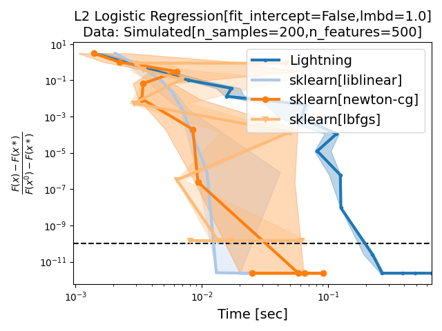
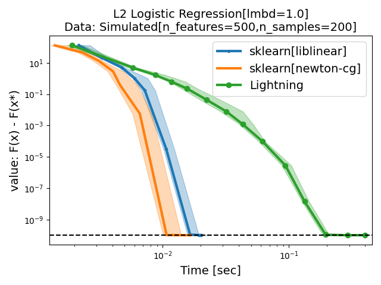
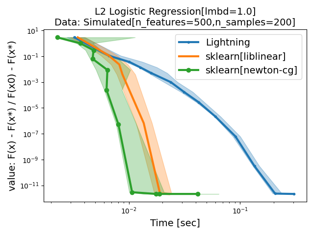
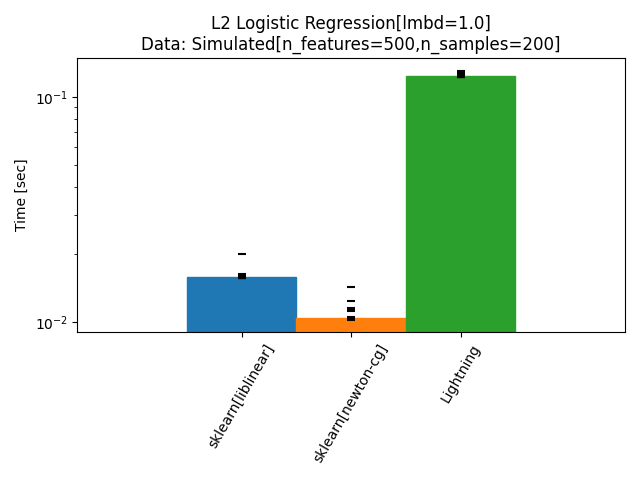
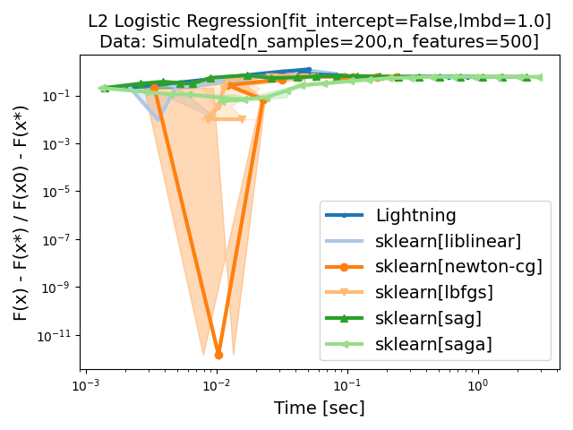
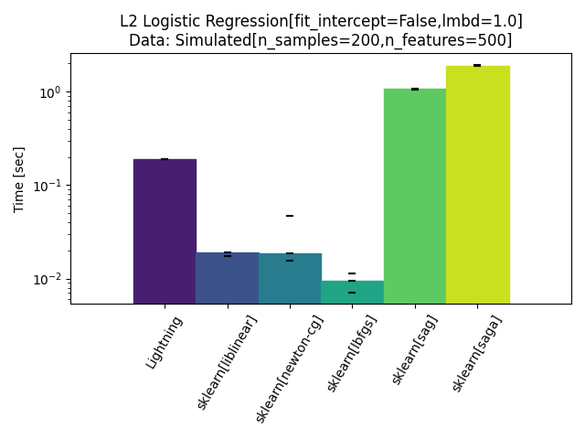

Note
Go to the end to download the full example code.
Run benchmark from a script#
![L2 Logistic Regression[lmbd=1.0] Data: Simulated[n_features=500,n_samples=200]](../_images/sphx_glr_plot_run_benchmark_001.png)
- 
- 
- 
- 
- 
- 
Simulated[n_features=500,n_samples=200]
|--L2 Logistic Regression[lmbd=1.0]
|--sklearn[liblinear]: initialization (1 / 15 reps)
|--sklearn[liblinear]: 0.0% (1 / 15 reps)
|--sklearn[liblinear]: 1.0% (1 / 15 reps)
|--sklearn[liblinear]: 2.0% (1 / 15 reps)
|--sklearn[liblinear]: 3.0% (1 / 15 reps)
|--sklearn[liblinear]: 9.4% (1 / 15 reps)
|--sklearn[liblinear]: 15.3% (1 / 15 reps)
|--sklearn[liblinear]: 22.0% (1 / 15 reps)
|--sklearn[liblinear]: 28.9% (1 / 15 reps)
|--sklearn[liblinear]: 66.6% (1 / 15 reps)
|--sklearn[liblinear]: initialization (2 / 15 reps)
|--sklearn[liblinear]: 0.0% (2 / 15 reps)
|--sklearn[liblinear]: 1.0% (2 / 15 reps)
|--sklearn[liblinear]: 2.0% (2 / 15 reps)
|--sklearn[liblinear]: 3.0% (2 / 15 reps)
|--sklearn[liblinear]: 9.4% (2 / 15 reps)
|--sklearn[liblinear]: 15.3% (2 / 15 reps)
|--sklearn[liblinear]: 22.0% (2 / 15 reps)
|--sklearn[liblinear]: 28.9% (2 / 15 reps)
|--sklearn[liblinear]: 66.6% (2 / 15 reps)
|--sklearn[liblinear]: initialization (3 / 15 reps)
|--sklearn[liblinear]: 0.0% (3 / 15 reps)
|--sklearn[liblinear]: 1.0% (3 / 15 reps)
|--sklearn[liblinear]: 2.0% (3 / 15 reps)
|--sklearn[liblinear]: 3.0% (3 / 15 reps)
|--sklearn[liblinear]: 9.4% (3 / 15 reps)
|--sklearn[liblinear]: 15.3% (3 / 15 reps)
|--sklearn[liblinear]: 22.0% (3 / 15 reps)
|--sklearn[liblinear]: 28.9% (3 / 15 reps)
|--sklearn[liblinear]: 66.6% (3 / 15 reps)
|--sklearn[liblinear]: initialization (4 / 15 reps)
|--sklearn[liblinear]: 0.0% (4 / 15 reps)
|--sklearn[liblinear]: 1.0% (4 / 15 reps)
|--sklearn[liblinear]: 2.0% (4 / 15 reps)
|--sklearn[liblinear]: 3.0% (4 / 15 reps)
|--sklearn[liblinear]: 9.4% (4 / 15 reps)
|--sklearn[liblinear]: 15.3% (4 / 15 reps)
|--sklearn[liblinear]: 22.0% (4 / 15 reps)
|--sklearn[liblinear]: 28.9% (4 / 15 reps)
|--sklearn[liblinear]: 66.6% (4 / 15 reps)
|--sklearn[liblinear]: initialization (5 / 15 reps)
|--sklearn[liblinear]: 0.0% (5 / 15 reps)
|--sklearn[liblinear]: 1.0% (5 / 15 reps)
|--sklearn[liblinear]: 2.0% (5 / 15 reps)
|--sklearn[liblinear]: 3.0% (5 / 15 reps)
|--sklearn[liblinear]: 9.4% (5 / 15 reps)
|--sklearn[liblinear]: 15.3% (5 / 15 reps)
|--sklearn[liblinear]: 22.0% (5 / 15 reps)
|--sklearn[liblinear]: 28.9% (5 / 15 reps)
|--sklearn[liblinear]: 66.6% (5 / 15 reps)
|--sklearn[liblinear]: initialization (6 / 15 reps)
|--sklearn[liblinear]: 0.0% (6 / 15 reps)
|--sklearn[liblinear]: 1.0% (6 / 15 reps)
|--sklearn[liblinear]: 2.0% (6 / 15 reps)
|--sklearn[liblinear]: 3.0% (6 / 15 reps)
|--sklearn[liblinear]: 9.4% (6 / 15 reps)
|--sklearn[liblinear]: 15.3% (6 / 15 reps)
|--sklearn[liblinear]: 22.0% (6 / 15 reps)
|--sklearn[liblinear]: 28.9% (6 / 15 reps)
|--sklearn[liblinear]: 66.6% (6 / 15 reps)
|--sklearn[liblinear]: initialization (7 / 15 reps)
|--sklearn[liblinear]: 0.0% (7 / 15 reps)
|--sklearn[liblinear]: 1.0% (7 / 15 reps)
|--sklearn[liblinear]: 2.0% (7 / 15 reps)
|--sklearn[liblinear]: 3.0% (7 / 15 reps)
|--sklearn[liblinear]: 9.4% (7 / 15 reps)
|--sklearn[liblinear]: 15.3% (7 / 15 reps)
|--sklearn[liblinear]: 22.0% (7 / 15 reps)
|--sklearn[liblinear]: 28.9% (7 / 15 reps)
|--sklearn[liblinear]: 66.6% (7 / 15 reps)
|--sklearn[liblinear]: initialization (8 / 15 reps)
|--sklearn[liblinear]: 0.0% (8 / 15 reps)
|--sklearn[liblinear]: 1.0% (8 / 15 reps)
|--sklearn[liblinear]: 2.0% (8 / 15 reps)
|--sklearn[liblinear]: 3.0% (8 / 15 reps)
|--sklearn[liblinear]: 9.4% (8 / 15 reps)
|--sklearn[liblinear]: 15.3% (8 / 15 reps)
|--sklearn[liblinear]: 22.0% (8 / 15 reps)
|--sklearn[liblinear]: 28.9% (8 / 15 reps)
|--sklearn[liblinear]: 66.6% (8 / 15 reps)
|--sklearn[liblinear]: initialization (9 / 15 reps)
|--sklearn[liblinear]: 0.0% (9 / 15 reps)
|--sklearn[liblinear]: 1.0% (9 / 15 reps)
|--sklearn[liblinear]: 2.0% (9 / 15 reps)
|--sklearn[liblinear]: 3.0% (9 / 15 reps)
|--sklearn[liblinear]: 9.4% (9 / 15 reps)
|--sklearn[liblinear]: 15.3% (9 / 15 reps)
|--sklearn[liblinear]: 22.0% (9 / 15 reps)
|--sklearn[liblinear]: 28.9% (9 / 15 reps)
|--sklearn[liblinear]: 66.6% (9 / 15 reps)
|--sklearn[liblinear]: initialization (10 / 15 reps)
|--sklearn[liblinear]: 0.0% (10 / 15 reps)
|--sklearn[liblinear]: 1.0% (10 / 15 reps)
|--sklearn[liblinear]: 2.0% (10 / 15 reps)
|--sklearn[liblinear]: 3.0% (10 / 15 reps)
|--sklearn[liblinear]: 9.4% (10 / 15 reps)
|--sklearn[liblinear]: 15.3% (10 / 15 reps)
|--sklearn[liblinear]: 22.0% (10 / 15 reps)
|--sklearn[liblinear]: 28.9% (10 / 15 reps)
|--sklearn[liblinear]: 66.6% (10 / 15 reps)
|--sklearn[liblinear]: initialization (11 / 15 reps)
|--sklearn[liblinear]: 0.0% (11 / 15 reps)
|--sklearn[liblinear]: 1.0% (11 / 15 reps)
|--sklearn[liblinear]: 2.0% (11 / 15 reps)
|--sklearn[liblinear]: 3.0% (11 / 15 reps)
|--sklearn[liblinear]: 9.4% (11 / 15 reps)
|--sklearn[liblinear]: 15.3% (11 / 15 reps)
|--sklearn[liblinear]: 22.0% (11 / 15 reps)
|--sklearn[liblinear]: 28.9% (11 / 15 reps)
|--sklearn[liblinear]: 66.6% (11 / 15 reps)
|--sklearn[liblinear]: initialization (12 / 15 reps)
|--sklearn[liblinear]: 0.0% (12 / 15 reps)
|--sklearn[liblinear]: 1.0% (12 / 15 reps)
|--sklearn[liblinear]: 2.0% (12 / 15 reps)
|--sklearn[liblinear]: 3.0% (12 / 15 reps)
|--sklearn[liblinear]: 9.4% (12 / 15 reps)
|--sklearn[liblinear]: 15.3% (12 / 15 reps)
|--sklearn[liblinear]: 22.0% (12 / 15 reps)
|--sklearn[liblinear]: 28.9% (12 / 15 reps)
|--sklearn[liblinear]: 66.6% (12 / 15 reps)
|--sklearn[liblinear]: initialization (13 / 15 reps)
|--sklearn[liblinear]: 0.0% (13 / 15 reps)
|--sklearn[liblinear]: 1.0% (13 / 15 reps)
|--sklearn[liblinear]: 2.0% (13 / 15 reps)
|--sklearn[liblinear]: 3.0% (13 / 15 reps)
|--sklearn[liblinear]: 9.4% (13 / 15 reps)
|--sklearn[liblinear]: 15.3% (13 / 15 reps)
|--sklearn[liblinear]: 22.0% (13 / 15 reps)
|--sklearn[liblinear]: 28.9% (13 / 15 reps)
|--sklearn[liblinear]: 66.6% (13 / 15 reps)
|--sklearn[liblinear]: initialization (14 / 15 reps)
|--sklearn[liblinear]: 0.0% (14 / 15 reps)
|--sklearn[liblinear]: 1.0% (14 / 15 reps)
|--sklearn[liblinear]: 2.0% (14 / 15 reps)
|--sklearn[liblinear]: 3.0% (14 / 15 reps)
|--sklearn[liblinear]: 9.4% (14 / 15 reps)
|--sklearn[liblinear]: 15.3% (14 / 15 reps)
|--sklearn[liblinear]: 22.0% (14 / 15 reps)
|--sklearn[liblinear]: 28.9% (14 / 15 reps)
|--sklearn[liblinear]: 66.6% (14 / 15 reps)
|--sklearn[liblinear]: initialization (15 / 15 reps)
|--sklearn[liblinear]: 0.0% (15 / 15 reps)
|--sklearn[liblinear]: 1.0% (15 / 15 reps)
|--sklearn[liblinear]: 2.0% (15 / 15 reps)
|--sklearn[liblinear]: 3.0% (15 / 15 reps)
|--sklearn[liblinear]: 9.4% (15 / 15 reps)
|--sklearn[liblinear]: 15.3% (15 / 15 reps)
|--sklearn[liblinear]: 22.0% (15 / 15 reps)
|--sklearn[liblinear]: 28.9% (15 / 15 reps)
|--sklearn[liblinear]: 66.6% (15 / 15 reps)
|--sklearn[liblinear]: done
|--sklearn[newton-cg]: initialization (1 / 15 reps)
|--sklearn[newton-cg]: 0.0% (1 / 15 reps)
|--sklearn[newton-cg]: 1.0% (1 / 15 reps)
|--sklearn[newton-cg]: 2.0% (1 / 15 reps)
|--sklearn[newton-cg]: 3.0% (1 / 15 reps)
|--sklearn[newton-cg]: 6.3% (1 / 15 reps)
|--sklearn[newton-cg]: 11.2% (1 / 15 reps)
|--sklearn[newton-cg]: 17.5% (1 / 15 reps)
|--sklearn[newton-cg]: 25.5% (1 / 15 reps)
|--sklearn[newton-cg]: 43.8% (1 / 15 reps)
|--sklearn[newton-cg]: initialization (2 / 15 reps)
|--sklearn[newton-cg]: 0.0% (2 / 15 reps)
|--sklearn[newton-cg]: 1.0% (2 / 15 reps)
|--sklearn[newton-cg]: 2.0% (2 / 15 reps)
|--sklearn[newton-cg]: 3.0% (2 / 15 reps)
|--sklearn[newton-cg]: 6.3% (2 / 15 reps)
|--sklearn[newton-cg]: 11.2% (2 / 15 reps)
|--sklearn[newton-cg]: 17.5% (2 / 15 reps)
|--sklearn[newton-cg]: 25.5% (2 / 15 reps)
|--sklearn[newton-cg]: 43.8% (2 / 15 reps)
|--sklearn[newton-cg]: initialization (3 / 15 reps)
|--sklearn[newton-cg]: 0.0% (3 / 15 reps)
|--sklearn[newton-cg]: 1.0% (3 / 15 reps)
|--sklearn[newton-cg]: 2.0% (3 / 15 reps)
|--sklearn[newton-cg]: 3.0% (3 / 15 reps)
|--sklearn[newton-cg]: 6.3% (3 / 15 reps)
|--sklearn[newton-cg]: 11.2% (3 / 15 reps)
|--sklearn[newton-cg]: 17.5% (3 / 15 reps)
|--sklearn[newton-cg]: 25.5% (3 / 15 reps)
|--sklearn[newton-cg]: 43.8% (3 / 15 reps)
|--sklearn[newton-cg]: initialization (4 / 15 reps)
|--sklearn[newton-cg]: 0.0% (4 / 15 reps)
|--sklearn[newton-cg]: 1.0% (4 / 15 reps)
|--sklearn[newton-cg]: 2.0% (4 / 15 reps)
|--sklearn[newton-cg]: 3.0% (4 / 15 reps)
|--sklearn[newton-cg]: 6.3% (4 / 15 reps)
|--sklearn[newton-cg]: 11.2% (4 / 15 reps)
|--sklearn[newton-cg]: 17.5% (4 / 15 reps)
|--sklearn[newton-cg]: 25.5% (4 / 15 reps)
|--sklearn[newton-cg]: 43.8% (4 / 15 reps)
|--sklearn[newton-cg]: initialization (5 / 15 reps)
|--sklearn[newton-cg]: 0.0% (5 / 15 reps)
|--sklearn[newton-cg]: 1.0% (5 / 15 reps)
|--sklearn[newton-cg]: 2.0% (5 / 15 reps)
|--sklearn[newton-cg]: 3.0% (5 / 15 reps)
|--sklearn[newton-cg]: 6.3% (5 / 15 reps)
|--sklearn[newton-cg]: 11.2% (5 / 15 reps)
|--sklearn[newton-cg]: 17.5% (5 / 15 reps)
|--sklearn[newton-cg]: 25.5% (5 / 15 reps)
|--sklearn[newton-cg]: 43.8% (5 / 15 reps)
|--sklearn[newton-cg]: initialization (6 / 15 reps)
|--sklearn[newton-cg]: 0.0% (6 / 15 reps)
|--sklearn[newton-cg]: 1.0% (6 / 15 reps)
|--sklearn[newton-cg]: 2.0% (6 / 15 reps)
|--sklearn[newton-cg]: 3.0% (6 / 15 reps)
|--sklearn[newton-cg]: 6.3% (6 / 15 reps)
|--sklearn[newton-cg]: 11.2% (6 / 15 reps)
|--sklearn[newton-cg]: 17.5% (6 / 15 reps)
|--sklearn[newton-cg]: 25.5% (6 / 15 reps)
|--sklearn[newton-cg]: 43.8% (6 / 15 reps)
|--sklearn[newton-cg]: initialization (7 / 15 reps)
|--sklearn[newton-cg]: 0.0% (7 / 15 reps)
|--sklearn[newton-cg]: 1.0% (7 / 15 reps)
|--sklearn[newton-cg]: 2.0% (7 / 15 reps)
|--sklearn[newton-cg]: 3.0% (7 / 15 reps)
|--sklearn[newton-cg]: 6.3% (7 / 15 reps)
|--sklearn[newton-cg]: 11.2% (7 / 15 reps)
|--sklearn[newton-cg]: 17.5% (7 / 15 reps)
|--sklearn[newton-cg]: 25.5% (7 / 15 reps)
|--sklearn[newton-cg]: 43.8% (7 / 15 reps)
|--sklearn[newton-cg]: initialization (8 / 15 reps)
|--sklearn[newton-cg]: 0.0% (8 / 15 reps)
|--sklearn[newton-cg]: 1.0% (8 / 15 reps)
|--sklearn[newton-cg]: 2.0% (8 / 15 reps)
|--sklearn[newton-cg]: 3.0% (8 / 15 reps)
|--sklearn[newton-cg]: 6.3% (8 / 15 reps)
|--sklearn[newton-cg]: 11.2% (8 / 15 reps)
|--sklearn[newton-cg]: 17.5% (8 / 15 reps)
|--sklearn[newton-cg]: 25.5% (8 / 15 reps)
|--sklearn[newton-cg]: 43.8% (8 / 15 reps)
|--sklearn[newton-cg]: initialization (9 / 15 reps)
|--sklearn[newton-cg]: 0.0% (9 / 15 reps)
|--sklearn[newton-cg]: 1.0% (9 / 15 reps)
|--sklearn[newton-cg]: 2.0% (9 / 15 reps)
|--sklearn[newton-cg]: 3.0% (9 / 15 reps)
|--sklearn[newton-cg]: 6.3% (9 / 15 reps)
|--sklearn[newton-cg]: 11.2% (9 / 15 reps)
|--sklearn[newton-cg]: 17.5% (9 / 15 reps)
|--sklearn[newton-cg]: 25.5% (9 / 15 reps)
|--sklearn[newton-cg]: 43.8% (9 / 15 reps)
|--sklearn[newton-cg]: initialization (10 / 15 reps)
|--sklearn[newton-cg]: 0.0% (10 / 15 reps)
|--sklearn[newton-cg]: 1.0% (10 / 15 reps)
|--sklearn[newton-cg]: 2.0% (10 / 15 reps)
|--sklearn[newton-cg]: 3.0% (10 / 15 reps)
|--sklearn[newton-cg]: 6.3% (10 / 15 reps)
|--sklearn[newton-cg]: 11.2% (10 / 15 reps)
|--sklearn[newton-cg]: 17.5% (10 / 15 reps)
|--sklearn[newton-cg]: 25.5% (10 / 15 reps)
|--sklearn[newton-cg]: 43.8% (10 / 15 reps)
|--sklearn[newton-cg]: initialization (11 / 15 reps)
|--sklearn[newton-cg]: 0.0% (11 / 15 reps)
|--sklearn[newton-cg]: 1.0% (11 / 15 reps)
|--sklearn[newton-cg]: 2.0% (11 / 15 reps)
|--sklearn[newton-cg]: 3.0% (11 / 15 reps)
|--sklearn[newton-cg]: 6.3% (11 / 15 reps)
|--sklearn[newton-cg]: 11.2% (11 / 15 reps)
|--sklearn[newton-cg]: 17.5% (11 / 15 reps)
|--sklearn[newton-cg]: 25.5% (11 / 15 reps)
|--sklearn[newton-cg]: 43.8% (11 / 15 reps)
|--sklearn[newton-cg]: initialization (12 / 15 reps)
|--sklearn[newton-cg]: 0.0% (12 / 15 reps)
|--sklearn[newton-cg]: 1.0% (12 / 15 reps)
|--sklearn[newton-cg]: 2.0% (12 / 15 reps)
|--sklearn[newton-cg]: 3.0% (12 / 15 reps)
|--sklearn[newton-cg]: 6.3% (12 / 15 reps)
|--sklearn[newton-cg]: 11.2% (12 / 15 reps)
|--sklearn[newton-cg]: 17.5% (12 / 15 reps)
|--sklearn[newton-cg]: 25.5% (12 / 15 reps)
|--sklearn[newton-cg]: 43.8% (12 / 15 reps)
|--sklearn[newton-cg]: initialization (13 / 15 reps)
|--sklearn[newton-cg]: 0.0% (13 / 15 reps)
|--sklearn[newton-cg]: 1.0% (13 / 15 reps)
|--sklearn[newton-cg]: 2.0% (13 / 15 reps)
|--sklearn[newton-cg]: 3.0% (13 / 15 reps)
|--sklearn[newton-cg]: 6.3% (13 / 15 reps)
|--sklearn[newton-cg]: 11.2% (13 / 15 reps)
|--sklearn[newton-cg]: 17.5% (13 / 15 reps)
|--sklearn[newton-cg]: 25.5% (13 / 15 reps)
|--sklearn[newton-cg]: 43.8% (13 / 15 reps)
|--sklearn[newton-cg]: initialization (14 / 15 reps)
|--sklearn[newton-cg]: 0.0% (14 / 15 reps)
|--sklearn[newton-cg]: 1.0% (14 / 15 reps)
|--sklearn[newton-cg]: 2.0% (14 / 15 reps)
|--sklearn[newton-cg]: 3.0% (14 / 15 reps)
|--sklearn[newton-cg]: 6.3% (14 / 15 reps)
|--sklearn[newton-cg]: 11.2% (14 / 15 reps)
|--sklearn[newton-cg]: 17.5% (14 / 15 reps)
|--sklearn[newton-cg]: 25.5% (14 / 15 reps)
|--sklearn[newton-cg]: 43.8% (14 / 15 reps)
|--sklearn[newton-cg]: initialization (15 / 15 reps)
|--sklearn[newton-cg]: 0.0% (15 / 15 reps)
|--sklearn[newton-cg]: 1.0% (15 / 15 reps)
|--sklearn[newton-cg]: 2.0% (15 / 15 reps)
|--sklearn[newton-cg]: 3.0% (15 / 15 reps)
|--sklearn[newton-cg]: 6.3% (15 / 15 reps)
|--sklearn[newton-cg]: 11.2% (15 / 15 reps)
|--sklearn[newton-cg]: 17.5% (15 / 15 reps)
|--sklearn[newton-cg]: 25.5% (15 / 15 reps)
|--sklearn[newton-cg]: 43.8% (15 / 15 reps)
|--sklearn[newton-cg]: done
|--Lightning: initialization (1 / 15 reps)
|--Lightning: 0.0% (1 / 15 reps)
|--Lightning: 1.0% (1 / 15 reps)
|--Lightning: 2.0% (1 / 15 reps)
|--Lightning: 3.0% (1 / 15 reps)
|--Lightning: 16.2% (1 / 15 reps)
|--Lightning: 21.3% (1 / 15 reps)
|--Lightning: 25.4% (1 / 15 reps)
|--Lightning: 28.8% (1 / 15 reps)
|--Lightning: 35.8% (1 / 15 reps)
|--Lightning: 43.2% (1 / 15 reps)
|--Lightning: 50.9% (1 / 15 reps)
|--Lightning: 61.6% (1 / 15 reps)
|--Lightning: 76.9% (1 / 15 reps)
|--Lightning: initialization (2 / 15 reps)
|--Lightning: 0.0% (2 / 15 reps)
|--Lightning: 1.0% (2 / 15 reps)
|--Lightning: 2.0% (2 / 15 reps)
|--Lightning: 3.0% (2 / 15 reps)
|--Lightning: 16.2% (2 / 15 reps)
|--Lightning: 21.3% (2 / 15 reps)
|--Lightning: 25.4% (2 / 15 reps)
|--Lightning: 28.8% (2 / 15 reps)
|--Lightning: 35.8% (2 / 15 reps)
|--Lightning: 43.2% (2 / 15 reps)
|--Lightning: 50.9% (2 / 15 reps)
|--Lightning: 61.6% (2 / 15 reps)
|--Lightning: 76.9% (2 / 15 reps)
|--Lightning: initialization (3 / 15 reps)
|--Lightning: 0.0% (3 / 15 reps)
|--Lightning: 1.0% (3 / 15 reps)
|--Lightning: 2.0% (3 / 15 reps)
|--Lightning: 3.0% (3 / 15 reps)
|--Lightning: 16.2% (3 / 15 reps)
|--Lightning: 21.3% (3 / 15 reps)
|--Lightning: 25.4% (3 / 15 reps)
|--Lightning: 28.8% (3 / 15 reps)
|--Lightning: 35.8% (3 / 15 reps)
|--Lightning: 43.2% (3 / 15 reps)
|--Lightning: 50.9% (3 / 15 reps)
|--Lightning: 61.6% (3 / 15 reps)
|--Lightning: 76.9% (3 / 15 reps)
|--Lightning: initialization (4 / 15 reps)
|--Lightning: 0.0% (4 / 15 reps)
|--Lightning: 1.0% (4 / 15 reps)
|--Lightning: 2.0% (4 / 15 reps)
|--Lightning: 3.0% (4 / 15 reps)
|--Lightning: 16.2% (4 / 15 reps)
|--Lightning: 21.3% (4 / 15 reps)
|--Lightning: 25.4% (4 / 15 reps)
|--Lightning: 28.8% (4 / 15 reps)
|--Lightning: 35.8% (4 / 15 reps)
|--Lightning: 43.2% (4 / 15 reps)
|--Lightning: 50.9% (4 / 15 reps)
|--Lightning: 61.6% (4 / 15 reps)
|--Lightning: 76.9% (4 / 15 reps)
|--Lightning: initialization (5 / 15 reps)
|--Lightning: 0.0% (5 / 15 reps)
|--Lightning: 1.0% (5 / 15 reps)
|--Lightning: 2.0% (5 / 15 reps)
|--Lightning: 3.0% (5 / 15 reps)
|--Lightning: 16.2% (5 / 15 reps)
|--Lightning: 21.3% (5 / 15 reps)
|--Lightning: 25.4% (5 / 15 reps)
|--Lightning: 28.8% (5 / 15 reps)
|--Lightning: 35.8% (5 / 15 reps)
|--Lightning: 43.2% (5 / 15 reps)
|--Lightning: 50.9% (5 / 15 reps)
|--Lightning: 61.6% (5 / 15 reps)
|--Lightning: 76.9% (5 / 15 reps)
|--Lightning: initialization (6 / 15 reps)
|--Lightning: 0.0% (6 / 15 reps)
|--Lightning: 1.0% (6 / 15 reps)
|--Lightning: 2.0% (6 / 15 reps)
|--Lightning: 3.0% (6 / 15 reps)
|--Lightning: 16.2% (6 / 15 reps)
|--Lightning: 21.3% (6 / 15 reps)
|--Lightning: 25.4% (6 / 15 reps)
|--Lightning: 28.8% (6 / 15 reps)
|--Lightning: 35.8% (6 / 15 reps)
|--Lightning: 43.2% (6 / 15 reps)
|--Lightning: 50.9% (6 / 15 reps)
|--Lightning: 61.6% (6 / 15 reps)
|--Lightning: 76.9% (6 / 15 reps)
|--Lightning: initialization (7 / 15 reps)
|--Lightning: 0.0% (7 / 15 reps)
|--Lightning: 1.0% (7 / 15 reps)
|--Lightning: 2.0% (7 / 15 reps)
|--Lightning: 3.0% (7 / 15 reps)
|--Lightning: 16.2% (7 / 15 reps)
|--Lightning: 21.3% (7 / 15 reps)
|--Lightning: 25.4% (7 / 15 reps)
|--Lightning: 28.8% (7 / 15 reps)
|--Lightning: 35.8% (7 / 15 reps)
|--Lightning: 43.2% (7 / 15 reps)
|--Lightning: 50.9% (7 / 15 reps)
|--Lightning: 61.6% (7 / 15 reps)
|--Lightning: 76.9% (7 / 15 reps)
|--Lightning: initialization (8 / 15 reps)
|--Lightning: 0.0% (8 / 15 reps)
|--Lightning: 1.0% (8 / 15 reps)
|--Lightning: 2.0% (8 / 15 reps)
|--Lightning: 3.0% (8 / 15 reps)
|--Lightning: 16.2% (8 / 15 reps)
|--Lightning: 21.3% (8 / 15 reps)
|--Lightning: 25.4% (8 / 15 reps)
|--Lightning: 28.8% (8 / 15 reps)
|--Lightning: 35.8% (8 / 15 reps)
|--Lightning: 43.2% (8 / 15 reps)
|--Lightning: 50.9% (8 / 15 reps)
|--Lightning: 61.6% (8 / 15 reps)
|--Lightning: 76.9% (8 / 15 reps)
|--Lightning: initialization (9 / 15 reps)
|--Lightning: 0.0% (9 / 15 reps)
|--Lightning: 1.0% (9 / 15 reps)
|--Lightning: 2.0% (9 / 15 reps)
|--Lightning: 3.0% (9 / 15 reps)
|--Lightning: 16.2% (9 / 15 reps)
|--Lightning: 21.3% (9 / 15 reps)
|--Lightning: 25.4% (9 / 15 reps)
|--Lightning: 28.8% (9 / 15 reps)
|--Lightning: 35.8% (9 / 15 reps)
|--Lightning: 43.2% (9 / 15 reps)
|--Lightning: 50.9% (9 / 15 reps)
|--Lightning: 61.6% (9 / 15 reps)
|--Lightning: 76.9% (9 / 15 reps)
|--Lightning: initialization (10 / 15 reps)
|--Lightning: 0.0% (10 / 15 reps)
|--Lightning: 1.0% (10 / 15 reps)
|--Lightning: 2.0% (10 / 15 reps)
|--Lightning: 3.0% (10 / 15 reps)
|--Lightning: 16.2% (10 / 15 reps)
|--Lightning: 21.3% (10 / 15 reps)
|--Lightning: 25.4% (10 / 15 reps)
|--Lightning: 28.8% (10 / 15 reps)
|--Lightning: 35.8% (10 / 15 reps)
|--Lightning: 43.2% (10 / 15 reps)
|--Lightning: 50.9% (10 / 15 reps)
|--Lightning: 61.6% (10 / 15 reps)
|--Lightning: 76.9% (10 / 15 reps)
|--Lightning: initialization (11 / 15 reps)
|--Lightning: 0.0% (11 / 15 reps)
|--Lightning: 1.0% (11 / 15 reps)
|--Lightning: 2.0% (11 / 15 reps)
|--Lightning: 3.0% (11 / 15 reps)
|--Lightning: 16.2% (11 / 15 reps)
|--Lightning: 21.3% (11 / 15 reps)
|--Lightning: 25.4% (11 / 15 reps)
|--Lightning: 28.8% (11 / 15 reps)
|--Lightning: 35.8% (11 / 15 reps)
|--Lightning: 43.2% (11 / 15 reps)
|--Lightning: 50.9% (11 / 15 reps)
|--Lightning: 61.6% (11 / 15 reps)
|--Lightning: 76.9% (11 / 15 reps)
|--Lightning: initialization (12 / 15 reps)
|--Lightning: 0.0% (12 / 15 reps)
|--Lightning: 1.0% (12 / 15 reps)
|--Lightning: 2.0% (12 / 15 reps)
|--Lightning: 3.0% (12 / 15 reps)
|--Lightning: 16.2% (12 / 15 reps)
|--Lightning: 21.3% (12 / 15 reps)
|--Lightning: 25.4% (12 / 15 reps)
|--Lightning: 28.8% (12 / 15 reps)
|--Lightning: 35.8% (12 / 15 reps)
|--Lightning: 43.2% (12 / 15 reps)
|--Lightning: 50.9% (12 / 15 reps)
|--Lightning: 61.6% (12 / 15 reps)
|--Lightning: 76.9% (12 / 15 reps)
|--Lightning: initialization (13 / 15 reps)
|--Lightning: 0.0% (13 / 15 reps)
|--Lightning: 1.0% (13 / 15 reps)
|--Lightning: 2.0% (13 / 15 reps)
|--Lightning: 3.0% (13 / 15 reps)
|--Lightning: 16.2% (13 / 15 reps)
|--Lightning: 21.3% (13 / 15 reps)
|--Lightning: 25.4% (13 / 15 reps)
|--Lightning: 28.8% (13 / 15 reps)
|--Lightning: 35.8% (13 / 15 reps)
|--Lightning: 43.2% (13 / 15 reps)
|--Lightning: 50.9% (13 / 15 reps)
|--Lightning: 61.6% (13 / 15 reps)
|--Lightning: 76.9% (13 / 15 reps)
|--Lightning: initialization (14 / 15 reps)
|--Lightning: 0.0% (14 / 15 reps)
|--Lightning: 1.0% (14 / 15 reps)
|--Lightning: 2.0% (14 / 15 reps)
|--Lightning: 3.0% (14 / 15 reps)
|--Lightning: 16.2% (14 / 15 reps)
|--Lightning: 21.3% (14 / 15 reps)
|--Lightning: 25.4% (14 / 15 reps)
|--Lightning: 28.8% (14 / 15 reps)
|--Lightning: 35.8% (14 / 15 reps)
|--Lightning: 43.2% (14 / 15 reps)
|--Lightning: 50.9% (14 / 15 reps)
|--Lightning: 61.6% (14 / 15 reps)
|--Lightning: 76.9% (14 / 15 reps)
|--Lightning: initialization (15 / 15 reps)
|--Lightning: 0.0% (15 / 15 reps)
|--Lightning: 1.0% (15 / 15 reps)
|--Lightning: 2.0% (15 / 15 reps)
|--Lightning: 3.0% (15 / 15 reps)
|--Lightning: 16.2% (15 / 15 reps)
|--Lightning: 21.3% (15 / 15 reps)
|--Lightning: 25.4% (15 / 15 reps)
|--Lightning: 28.8% (15 / 15 reps)
|--Lightning: 35.8% (15 / 15 reps)
|--Lightning: 43.2% (15 / 15 reps)
|--Lightning: 50.9% (15 / 15 reps)
|--Lightning: 61.6% (15 / 15 reps)
|--Lightning: 76.9% (15 / 15 reps)
|--Lightning: done (timeout)
Saving result in: /home/circleci/project/benchmarks/benchmark_logreg_l2/outputs/benchopt_run_2025-07-28_21h29m57.parquet
Save objective_curve plot of objective_value for Simulated[n_features=500,n_samples=200] and L2 Logistic Regression[lmbd=1.0] as: /home/circleci/project/benchmarks/benchmark_logreg_l2/outputs/a015812b8ebac8c87f4dcaf5b6ba0e77_objective_value_objective_curve.pdf
Save objective_curve plot of objective_Test loss for Simulated[n_features=500,n_samples=200] and L2 Logistic Regression[lmbd=1.0] as: /home/circleci/project/benchmarks/benchmark_logreg_l2/outputs/a015812b8ebac8c87f4dcaf5b6ba0e77_objective_Test loss_objective_curve.pdf
Save suboptimality_curve plot of objective_value for Simulated[n_features=500,n_samples=200] and L2 Logistic Regression[lmbd=1.0] as: /home/circleci/project/benchmarks/benchmark_logreg_l2/outputs/a015812b8ebac8c87f4dcaf5b6ba0e77_objective_value_suboptimality_curve.pdf
Save relative_suboptimality_curve plot of objective_value for Simulated[n_features=500,n_samples=200] and L2 Logistic Regression[lmbd=1.0] as: /home/circleci/project/benchmarks/benchmark_logreg_l2/outputs/a015812b8ebac8c87f4dcaf5b6ba0e77_objective_value_relative_suboptimality_curve.pdf
Save bar_chart plot of objective_value for Simulated[n_features=500,n_samples=200] and L2 Logistic Regression[lmbd=1.0] as: /home/circleci/project/benchmarks/benchmark_logreg_l2/outputs/a015812b8ebac8c87f4dcaf5b6ba0e77_objective_value_bar_chart.pdf
/home/circleci/project/benchopt/plotting/plot_boxplot.py:72: FutureWarning: DataFrameGroupBy.apply operated on the grouping columns. This behavior is deprecated, and in a future version of pandas the grouping columns will be excluded from the operation. Either pass `include_groups=False` to exclude the groupings or explicitly select the grouping columns after groupby to silence this warning.
.groupby('idx_rep').apply(
/home/circleci/project/benchopt/plotting/plot_boxplot.py:78: FutureWarning: DataFrameGroupBy.apply operated on the grouping columns. This behavior is deprecated, and in a future version of pandas the grouping columns will be excluded from the operation. Either pass `include_groups=False` to exclude the groupings or explicitly select the grouping columns after groupby to silence this warning.
.groupby('idx_rep').apply(
/home/circleci/project/benchopt/plotting/plot_boxplot.py:72: FutureWarning: DataFrameGroupBy.apply operated on the grouping columns. This behavior is deprecated, and in a future version of pandas the grouping columns will be excluded from the operation. Either pass `include_groups=False` to exclude the groupings or explicitly select the grouping columns after groupby to silence this warning.
.groupby('idx_rep').apply(
/home/circleci/project/benchopt/plotting/plot_boxplot.py:78: FutureWarning: DataFrameGroupBy.apply operated on the grouping columns. This behavior is deprecated, and in a future version of pandas the grouping columns will be excluded from the operation. Either pass `include_groups=False` to exclude the groupings or explicitly select the grouping columns after groupby to silence this warning.
.groupby('idx_rep').apply(
/home/circleci/project/benchopt/plotting/plot_boxplot.py:72: FutureWarning: DataFrameGroupBy.apply operated on the grouping columns. This behavior is deprecated, and in a future version of pandas the grouping columns will be excluded from the operation. Either pass `include_groups=False` to exclude the groupings or explicitly select the grouping columns after groupby to silence this warning.
.groupby('idx_rep').apply(
/home/circleci/project/benchopt/plotting/plot_boxplot.py:78: FutureWarning: DataFrameGroupBy.apply operated on the grouping columns. This behavior is deprecated, and in a future version of pandas the grouping columns will be excluded from the operation. Either pass `include_groups=False` to exclude the groupings or explicitly select the grouping columns after groupby to silence this warning.
.groupby('idx_rep').apply(
Save boxplot plot of objective_value for Simulated[n_features=500,n_samples=200] and L2 Logistic Regression[lmbd=1.0] as: /home/circleci/project/benchmarks/benchmark_logreg_l2/outputs/a015812b8ebac8c87f4dcaf5b6ba0e77_objective_value_boxplot.pdf
/home/circleci/project/benchopt/plotting/plot_boxplot.py:72: FutureWarning: DataFrameGroupBy.apply operated on the grouping columns. This behavior is deprecated, and in a future version of pandas the grouping columns will be excluded from the operation. Either pass `include_groups=False` to exclude the groupings or explicitly select the grouping columns after groupby to silence this warning.
.groupby('idx_rep').apply(
/home/circleci/project/benchopt/plotting/plot_boxplot.py:78: FutureWarning: DataFrameGroupBy.apply operated on the grouping columns. This behavior is deprecated, and in a future version of pandas the grouping columns will be excluded from the operation. Either pass `include_groups=False` to exclude the groupings or explicitly select the grouping columns after groupby to silence this warning.
.groupby('idx_rep').apply(
/home/circleci/project/benchopt/plotting/plot_boxplot.py:72: FutureWarning: DataFrameGroupBy.apply operated on the grouping columns. This behavior is deprecated, and in a future version of pandas the grouping columns will be excluded from the operation. Either pass `include_groups=False` to exclude the groupings or explicitly select the grouping columns after groupby to silence this warning.
.groupby('idx_rep').apply(
/home/circleci/project/benchopt/plotting/plot_boxplot.py:78: FutureWarning: DataFrameGroupBy.apply operated on the grouping columns. This behavior is deprecated, and in a future version of pandas the grouping columns will be excluded from the operation. Either pass `include_groups=False` to exclude the groupings or explicitly select the grouping columns after groupby to silence this warning.
.groupby('idx_rep').apply(
/home/circleci/project/benchopt/plotting/plot_boxplot.py:72: FutureWarning: DataFrameGroupBy.apply operated on the grouping columns. This behavior is deprecated, and in a future version of pandas the grouping columns will be excluded from the operation. Either pass `include_groups=False` to exclude the groupings or explicitly select the grouping columns after groupby to silence this warning.
.groupby('idx_rep').apply(
/home/circleci/project/benchopt/plotting/plot_boxplot.py:78: FutureWarning: DataFrameGroupBy.apply operated on the grouping columns. This behavior is deprecated, and in a future version of pandas the grouping columns will be excluded from the operation. Either pass `include_groups=False` to exclude the groupings or explicitly select the grouping columns after groupby to silence this warning.
.groupby('idx_rep').apply(
Save boxplot plot of objective_Test loss for Simulated[n_features=500,n_samples=200] and L2 Logistic Regression[lmbd=1.0] as: /home/circleci/project/benchmarks/benchmark_logreg_l2/outputs/a015812b8ebac8c87f4dcaf5b6ba0e77_objective_Test loss_boxplot.pdf
from pathlib import Path
import matplotlib.pyplot as plt
from benchopt import run_benchmark
from benchopt.benchmark import Benchmark
from benchopt.plotting import plot_benchmark, PLOT_KINDS
from benchopt.plotting.plot_objective_curve import reset_solver_styles_idx
BENCHMARK_PATH = (
Path().resolve().parent / 'benchmarks' / 'benchmark_logreg_l2'
)
try:
save_file = run_benchmark(
BENCHMARK_PATH,
solver_names=['sklearn[liblinear]', 'sklearn[newton-cg]', 'lightning'],
dataset_names=["Simulated[n_features=500,n_samples=200]"],
objective_filters=['L2 Logistic Regression[lmbd=1.0]'],
max_runs=100, timeout=20, n_repetitions=15,
plot_result=False, show_progress=True
)
except RuntimeError:
raise RuntimeError(
"This example can only work when Logreg-l2 benchmark is cloned in a "
"`benchmarks` folder. Please run:\n"
"$ git clone https://github.com/benchopt/benchmark_logreg_l2 "
f"{BENCHMARK_PATH.resolve()}"
)
kinds = list(PLOT_KINDS.keys())
reset_solver_styles_idx()
figs = plot_benchmark(save_file, benchmark=Benchmark(BENCHMARK_PATH),
kinds=kinds, html=False)
plt.show()
Total running time of the script: (0 minutes 35.376 seconds)